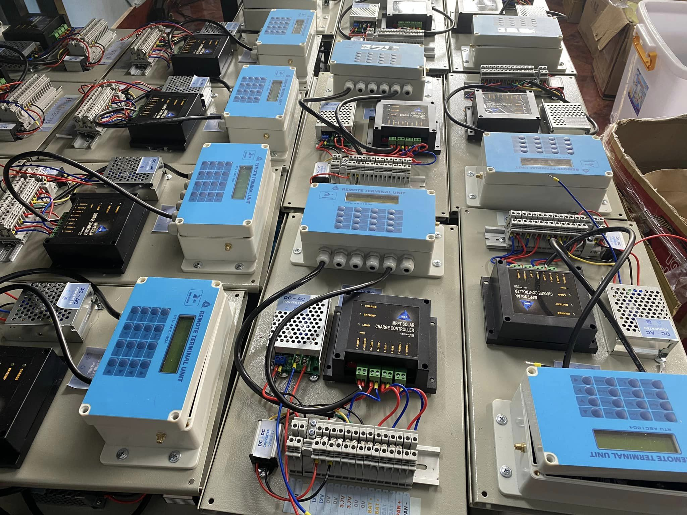

REMOTE TERMINAL UNIT
RTU ABC1804
Thiết bị thu thập, lưu trữ và truyền tải dữ liệu sản xuất tại Việt Nam
30.000.000 VNĐ

Thông số kỹ thuật
Đầu vào kỹ thuật số
2 kênh kỹ thuật số đọc xung tốc độ cao: 250 Hz
2 kênh kỹ thuật số đọc đầu vào
Đầu vào tương tự
3 kênh Tương tự 24 bit tiêu chuẩn d-20mA, 1 kênh 12 bit 0-10V
Điện áp
12V/24V - 2W
Communication
RS232 và RS485 có thể cập nhật Modbus RTU
Lưu trữ
30 ngày
Kích thước
190x80x60m m
Gửi dữ liệu
Gửi dữ liệu qua GSM: GSM850MHz, EGSM900MHz, DSC1800MHz, PCS1900MHz
Đáp ứng các tiêu chuẩn kỹ thuật QCVN 12:2015/BTTTT và QCVN
86:2015/BTTTT.
Các đầu ra
Rơle 2 kênh

Các tính năng
RTU ABC1804 là một thiết bị đầu cuối từ xa nhỏ gọn, tiết kiệm năng lượng, phù hợp với các lĩnh vực giám sát từ xa như:
- Theo dõi mực nước sông và hồ chứa
- Giám sát các chỉ số chất lượng nước nằm rải rác trong các nhà máy và khu dân cư
- Giám sát khí tượng thủy văn ở những nơi xa xôi
- Điều khiển máy bơm, mở và đóng cửa tràn,...
- Modbus Slave có thể được sử dụng để kết nối với Hệ thống Scada của Nhà máy
- Có thể được sử dụng với các hệ thống năng lượng mặt trời, yêu cầu tiết kiệm năng lượng